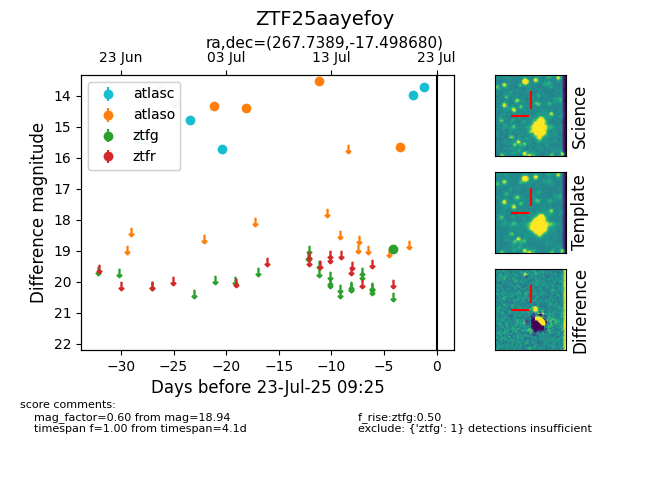

Target ZTF25aayefoy at 2025-07-23 11:48, see:
FINK: fink-portal.org/ZTF25aayefoy
Lasair: lasair-ztf.lsst.ac.uk/objects/ZTF25aayefoy
ALeRCE: alerce.online/object/ZTF25aayefoy
alt names
ZTF25aayefoy (ztf,fink)
coordinates:
equatorial (ra, dec) = (267.7389,-17.49868)
galactic (l, b) = (10.4491,+4.83605)
photometry
last atlasc=13.73, atlaso=15.64, ztfg=18.94
7 atlasc, 5 atlaso, 1 ztfg detections
